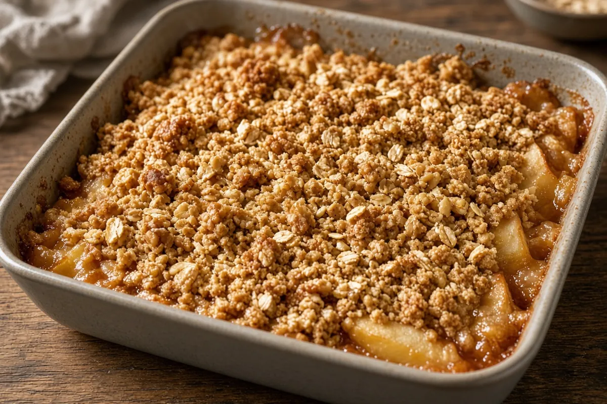

Shortcut Apple Crumble with Canned Pie Filling
An 8-inch apple crumble that starts with canned pie filling and the same oat streusel as our fresh Apple Crumble. Fifteen minutes of prep, a 30- to 35-minute bake, then a 30-minute cool so the filling sets.
Adapted from Apple Crumble

8 servings
By
Yield: 8 servings
Prep:
Cook:
Cool: 30 minutes
Total:
Difficulty: Easy
Ingredients
- 2 cans (21 ounces each) apple pie filling
- 1 tablespoon lemon juice
- 1/2 teaspoon ground cinnamon, for the filling
- 1 pinch ground nutmeg
- 1 cup all-purpose flour
- 3/4 cup old-fashioned rolled oats
- 2/3 cup packed light brown sugar
- 1/2 teaspoon ground cinnamon, for the streusel
- 1/4 teaspoon kosher salt
- 1/2 cup (1 stick) cold unsalted butter, cubed
- 1 Granny Smith apple, diced small, optional
Instructions
- Heat the oven to 375°F with a rack in the middle. Butter an 8-inch square baking pan and set it on a sheet pan to catch drips, 5 minutes.
- Make the streusel: whisk the flour, oats, brown sugar, cinnamon, and salt. Work in the cold butter with your fingertips until pea-size clumps form, 8 minutes. Refrigerate the streusel while you prep the filling.
- In the prepared pan, stir the apple pie filling with the lemon juice, cinnamon, nutmeg, and the diced Granny Smith apple if using. Snip any large slices with a knife and spread evenly, 5 minutes. No stovetop step is needed; the canned filling is already cooked and thickened.
- Scatter the streusel evenly over the top, pressing a few clumps together for big crumbs, 2 minutes.
- Bake at 375°F until the edges bubble and the streusel is deep golden, 30 to 35 minutes.
- Cool on a rack at least 30 minutes so the filling sets before serving.
Notes: Canned filling runs sweeter than fresh; the lemon juice and optional Granny Smith apple add tartness and texture.